Dostępne Klasy | Light | Medium | Heavy
Klasy Postaci
Autor: Zetrig Gaming
| Elementalista 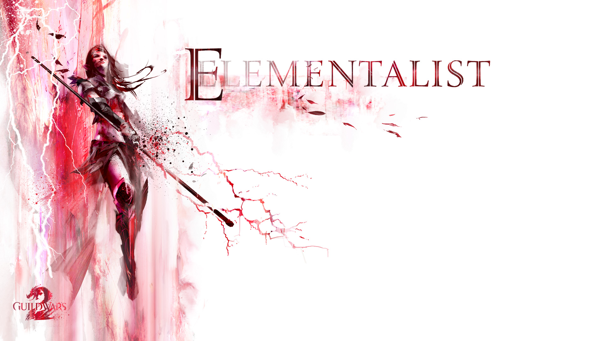 |
Mesmer 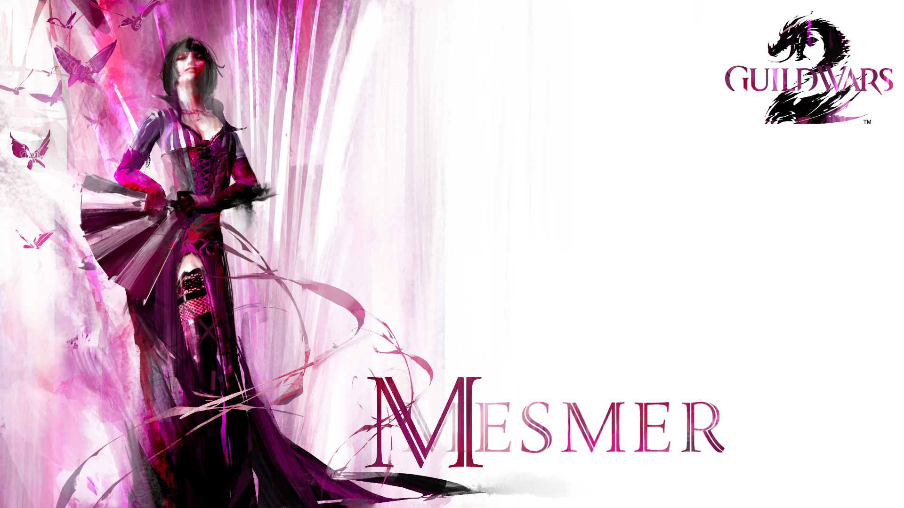 |
Nekromanta 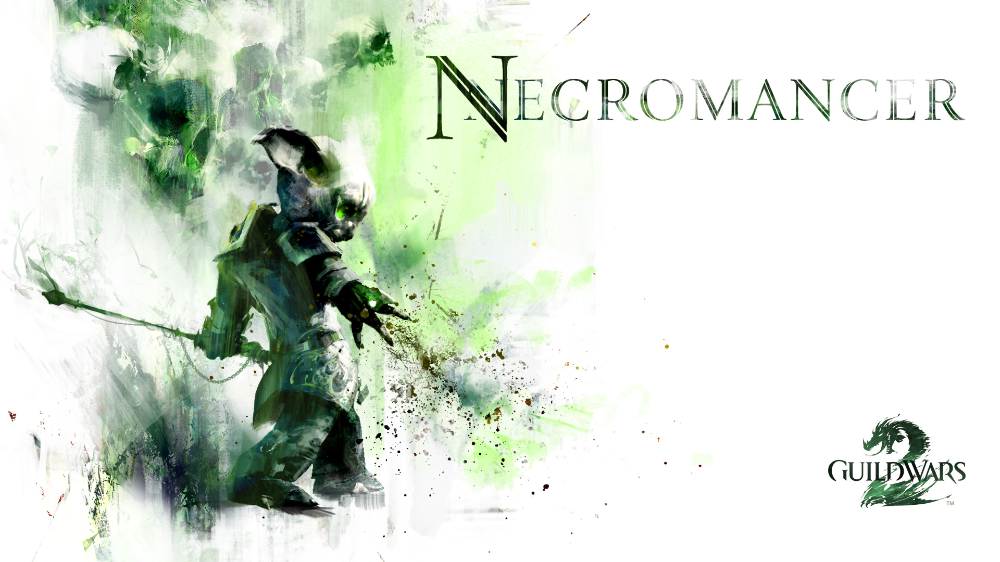 |
| Inżynier 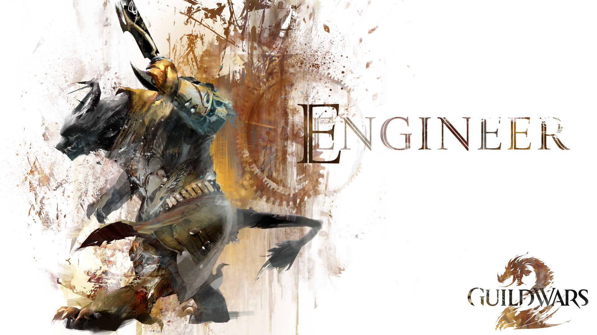 |
Łowca 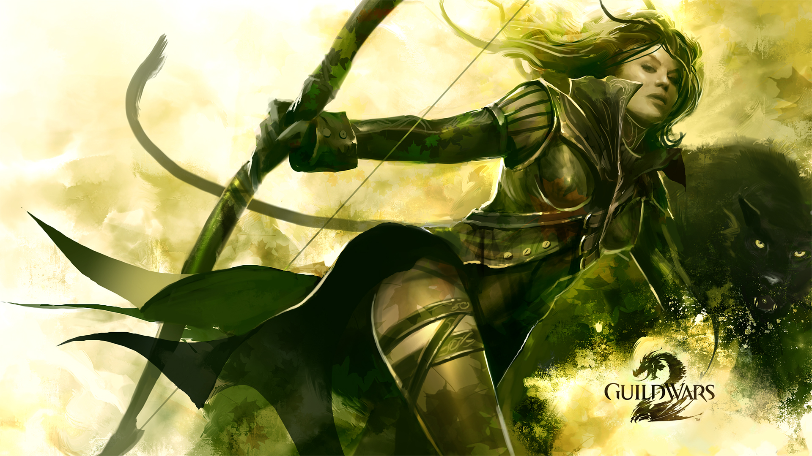 |
Złodziej 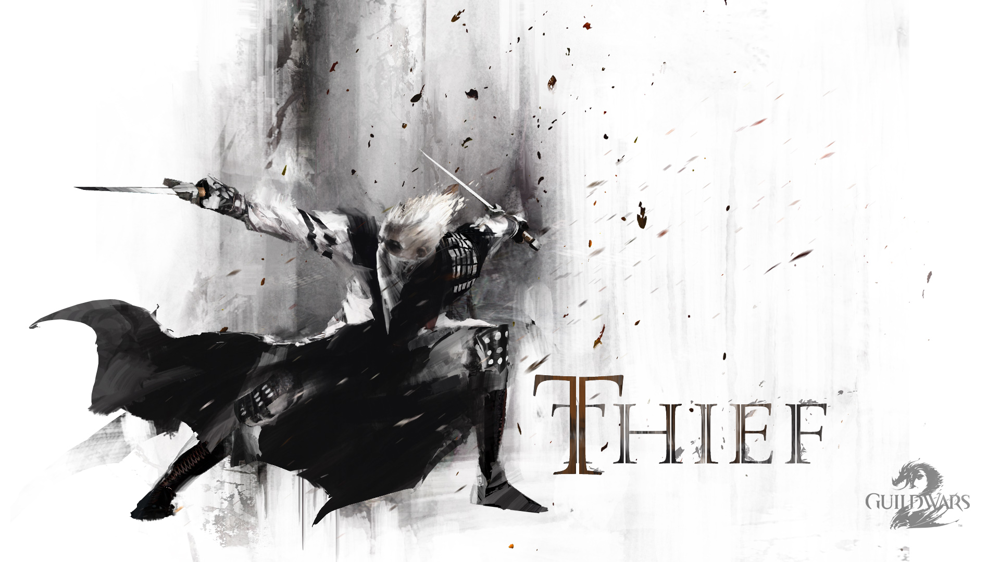 |
| Guardian 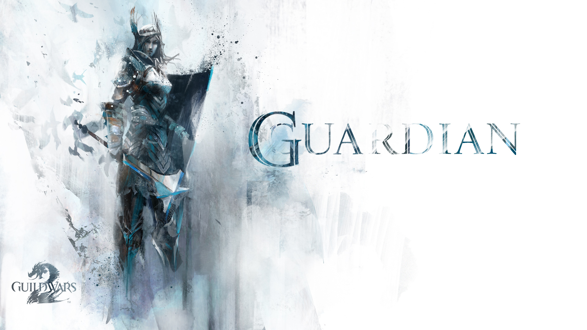 |
Revenant 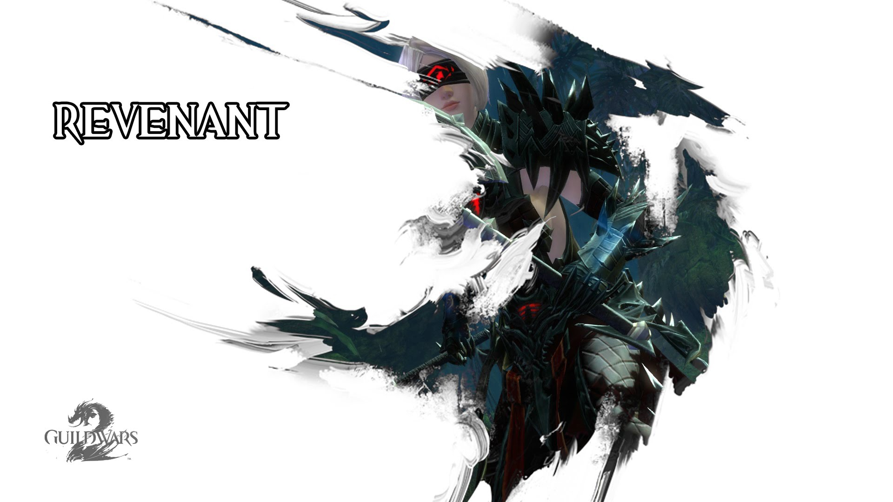 |
Wojownik 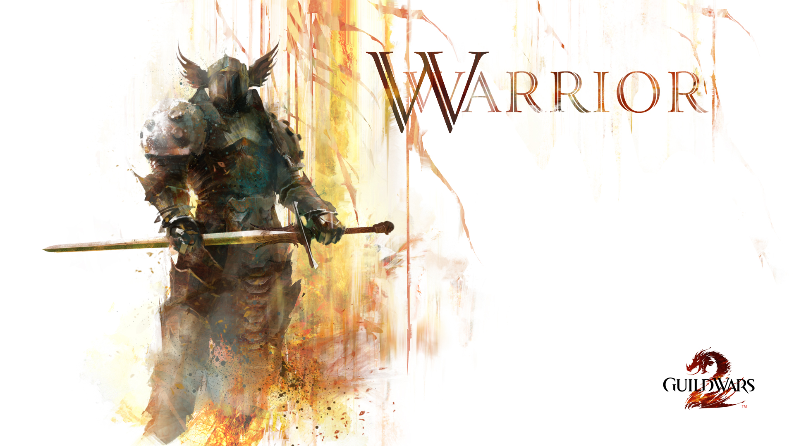 |
Dostępne Crafty | Wytwarzanie Zbroi | Wytwarzanie Broni | Pozostałe
Rzemiosło
| Tailor |
Leatherworker |
Armorsmith 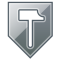 |
| Weaponsmith 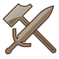 |
Huntsman |
Artificer |
Cook |
Jeweler 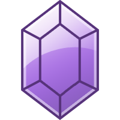 |
Scribe 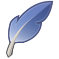 |
Autor: Gruby Szymek
O wyborze serwera
Autor: SuperBlimek
O Combofieldach i Finisherach
Pytania od Was... | ...i Nasze Odpowiedzi na Nie
FAQ Pisane
- Widziałem gracza na wierzchowcu. Gdzie takiego dostanę?
- Widziałem szybującego gracza. Kiedy też będę miał możliwość szybować?
- Czy jestem jakoś ograniczony w zbieractwie?
- Gdzie mogę sprawdzić wszystkie moje daily questy?
- Czy Guild Wars 2 wymaga inwestowania w Item Shopa by być pełnowartościowym graczem w endgamie?
- Czy mój level zawsze się skaluje bez względu na to gdzie pójdę i czy jest sposób na zwiększenie obrażeń na mapach przewidzianych dla graczy o niskim poziomie?
- Na czym polegają instancje w Guild Wars 2?
- Czy jest polska wersja językowa gry?
- Czy są jakieś przydatne linki, dzięki którym od razu dowiem się więcej o grze?
- Jak wygląda kupno Gemów w grze?
Wierzchowce weszły razem z dodatkiem Path of Fire. Raptora dostajesz już w trakcie pierwszej misji, z resztą trzeba się troszkę więcej namęczyć. Ale generalnie dostejesz je stopniowo wraz z tym jak rozwija się fabuła dodatku.
Glider czyli możliwość szybowania jak to ująłeś weszła razem z pierwszym dodatkiem -Heart of Thorns... Urocza sprawa i mniejsze prawdopodobieństwo śmierci przy spadaniu (jeśli masz odpowiedni refleks przy używaniu spacji)
Jedynymi Twoim ogranicznikami są: czas, ilość narzędzi, oraz miejsca jakie posiadasz. Dosłownie. Maksymalna ilość materiałów w banku jakie możesz posiadać to 250 (możesz powiększyć po kupieniu itemów za gemy). Dodatkowo masz bank taby, które możesz zapełnić (30 miejsc na jeden bank tab; ilość bank tabów również możesz zwiększyć poprzez zakupy w gemstorze).
Daily questy wyświetlają się w prawym górnym rogu. Jeśli jednak to się nie dzieje proszę naciśnij "H" w przed ostatnią zakładkę i tam powinno być daily. Pamiętaj, że wystraczy, że ukończysz trzy z nich, by zaliczyło Ci daily.
Item Shop, jak określiłeś, nie jest rzeczą wymaganą w end-game (ani zakupy w nim), chociaż wolałbym to określić raczej jako late-game. Item shop, a raczej gem shop oferuje rzeczy powiększające np. miejsce w banku o kolejnego bank taba albo ilość dostępnych miejsc na postać. Gem shop jest aby graczowi było lżej, albo, żeby lepiej wyglądał, jednak używanie go nie sprawia, że wybija się na tle innych jeśli chodzi o statystyki. Jest raczej po to aby ułatwić zarządzanie kontem, upiększyć postać, czy przyśpieszyć pewne zadania np. zdobywanie doświadczenia. Korzystanie z niego nie jest to natomiast w żadnej mierze wymagane.
Jedyne rzeczy, których zakup jest niejako wymogiem (da się grać bez nich, ale to jak granie bez ręki) to dodatki Heart of Thorns, oraz Path of Fire, a także przeszłe epizody Living Story (pomniejszych fragmentów story łączących poszczególne dodatki ze sobą). Zakup pełnej wersji gry rekomendujemy jeśli na koncie F2P grasz dłużej niż dwa – trzy tygodnie. Taki czas daje Ci gwarancję, żę nie zapłacisz za grę, w którą nie pograsz dłużej, a jednocześnie da Ci stosunkowo szybki dostęp do pełnej funkcjonalności gry i zniesie dotkliwe ograniczenia.
Level zawsze się skaluje. Niestety zwiększenie obrażeń na mapach niskolevelowych jest jedynie możliwe gdy zdobędziesz ekwipunek lepszej klasy (np. zamiast masterwork ubierzesz zbroję rare). W tym momencie moge jedynie powiedzieć, że może i jest ciężej, ale DASZ RADĘ! P. S. Jest też wiele map przewidzianych typowo dla postaci na poziom 80, więc wbijanie maksymalnego poziomu ma jak najbardziej sens.
Instancje są odpalane podczas personal story postaci, bądź też momencie kiedy robi się dungeony, raidy, lub fractale. Instancją można też nazwać Home'a. Instancja posiada właściwości stosowne do parametrów hosta, a więc osoby, która otwiera instancję. W większości instancji wyłączone jest używanie mountów, oraz gliding. Co do zasady w większości instancji można swobodnie wchodzić i wychodzić, ale nie jest to regułą. Instancje są tworzone dla danego party (do 5 osób), składu raidowego (do 10 osób), a w wyjątkowych sytuacjach dla regularnego składu (do 50 osób). Możliwe są rotacje osób w instancji, jednak obowiązuje stosowny limit (np. w dungu nie będzie mogło brać udziału więcej niż 5 osób na raz, ale nic nie stoi na przeszkodzie by w połowie Janek zmienił Kacpra, lub odwrotnie).
Guild Wars 2 ma wiele wersji językowych - angielską, niemiecką, hiszpańską... niestety polskiej jeszcze nie ma. Jeśli masz jednak problem ze zrozumieniem czegoś ze względu na język – pytaj. Gracze chętnie podpowiedzą co z czym. Sporą pomocą mogą okazać się też poradniki na naszej stronie.
Oczywiście! Po pierwsze multum informacji znajdziesz na naszej stronie – część opisaliśmy sami, a to czego nie zdołaliśmy jeszcze sami opisać podlinkowaliśmy do zewnętrznych stron. Po drugie jak mawiają „koniec języka, za przewodnika”. Pytaj, a bardziej doświadczeni gracze z pewnością pomogą i objaśnią Ci niejasne kwestie. Ponieważ gra Guild Wars 2 ma bardzo wiele aspektów i do wielu przydają się poradniki nasza strona zbiera wszystkie użyteczne strony w jednym miejscu. Ten dział warto dodać do swoich zakładek i regularnie z niego korzystać.
Gemy w grze można kupić na dwa różne sposoby. W ramach przewalutowania golda w grze bądź też normalnych pieniędzy. Tu od razu dodam, że odradzamy zakup ze źródeł nieoficjalnych tj nie wymienionych tu grozi to banem, oraz utratą zakupionych gemów.